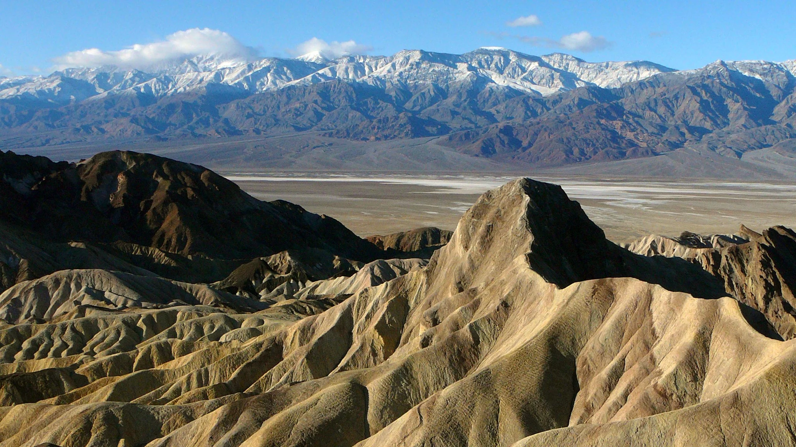
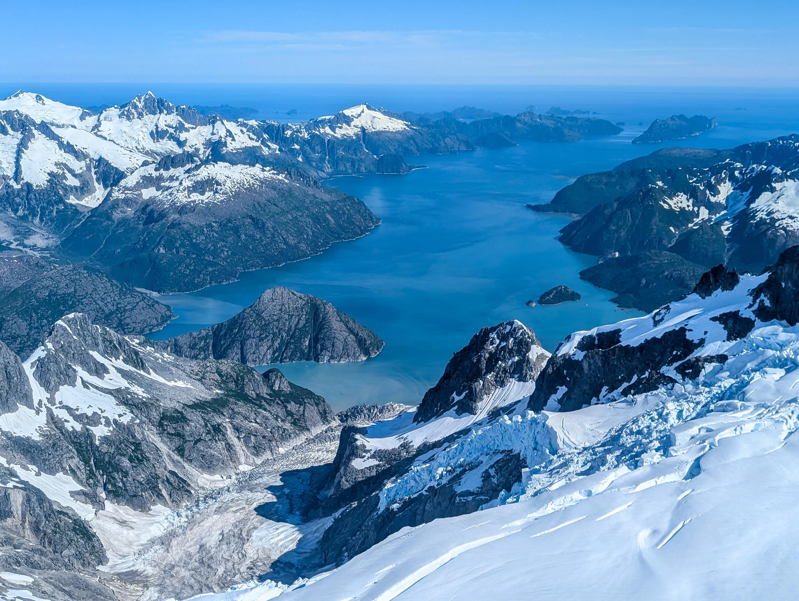
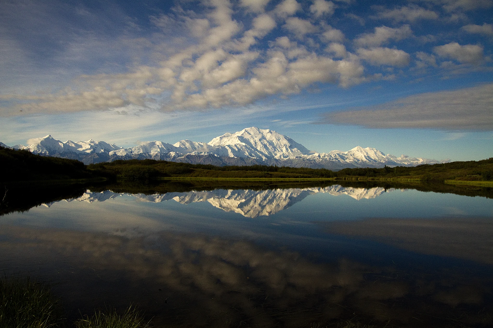
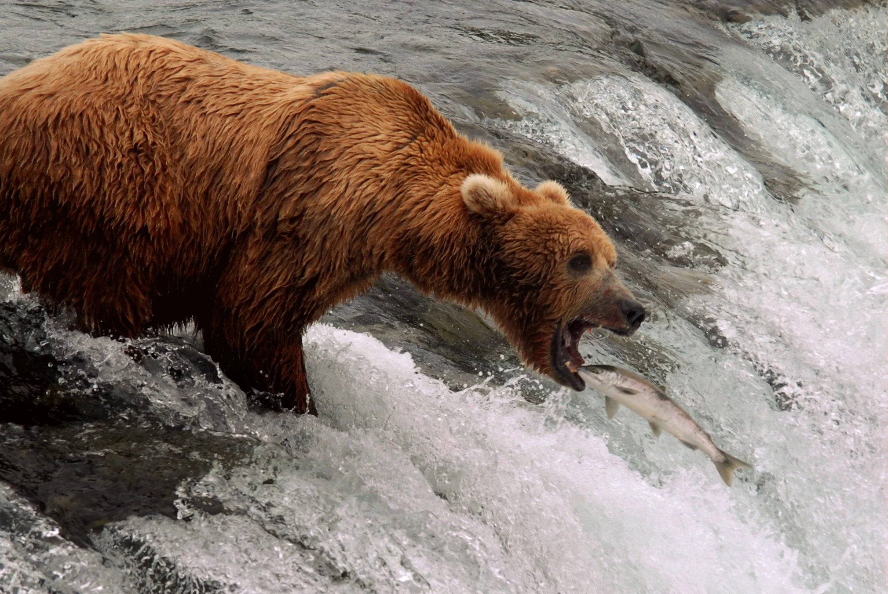

THEME 01 / U.S. NATIONAL PARKS
美國國家公園
從一座公園開始。
看懂地景，也知道怎麼安排。
把親身經驗、景點故事與逐日路線放在一起。
選擇想去的國家公園 ↗8 座國家公園3 條區域行程中文／English・照片・離線閱讀
AN ILLUSTRATED PARK ATLAS
沿著地圖，走進荒野
從峽谷到冰川，點選 8 座公園的標記開始閱讀。插畫呈現旅行氛圍，標記為概略位置；下方卡片也提供相同連結。
AI 生成旅行插畫，非實景照片或導航地圖。阿拉斯加與夏威夷為不同比例的插圖；實際入口、道路與距離請查各公園官方地圖。
CHOOSE YOUR PARK
國家公園總覽
先選一座公園，再連到完整路線與周邊景點。
此地區尚無旅行導覽，請選擇其他地區或查看全部公園。

AMERICAN WEST
黃石Yellowstone
熱泉、峽谷、清晨觀獸與遊客中心，分區安排短走。
進入公園導覽 →
AMERICAN WEST
大提頓Grand Teton
斷層山脈、冰川湖泊與蛇河，從北部湖區到歷史穀倉。
進入公園導覽 →AMERICAN WEST
大峽谷Grand Canyon
南緣觀景、Yavapai 地質博物館與直升機體驗。
進入公園導覽 →
AMERICAN WEST
死亡谷Death Valley
鹽灘、沙丘與彩色山丘，逐站認識沙漠地景。
進入公園導覽 →
ALASKA
基奈峽灣Kenai Fjords
從 Seward 出海，看山谷中的冰緩緩抵達海洋。海岸線的形狀，是冰川留下的立體筆記。
進入公園導覽 →
ALASKA
丹奈利Denali
用一段巴士旅程讀懂內陸荒野，再用短步道和遊客中心，把遠方的山變成眼前的故事。
進入公園導覽 →
ALASKA
卡特邁Katmai
看熊的重點不只是站上瀑布平台，而是讀懂河流、食物與季節，給動物足夠的空間。
進入公園導覽 →
ALASKA
蘭格—聖伊萊亞斯Wrangell–St. Elias
從 Copper Center 的展覽與短步道開始，認識這片巨大荒野；若想進入 Kennecott，請另留一段旅程。
進入公園導覽 →FOLLOW THE JOURNEY
想直接照著安排？選完整行程。
YELLOWSTONE / GRAND TETON
熱泉・野生動物・提頓山脈
Bozeman 進出，四日串遊兩園；景點取捨、短步道與第五日延伸。
看黃石與大提頓路線 →SOUTHWEST
拉斯維加斯・沙漠與峽谷
死亡谷一日，加上大峽谷與 Page 兩日路線；串聯羚羊谷、馬蹄灣與沿途停留。
看美西行程 →ALASKA / 9 DAYS
鐵路・冰川・四座國家公園
Seward 遊船、Denali 火車與飛行、Katmai 看熊，再沿公路到 Copper Center。
看阿拉斯加九日 →AROUND THE PARKS
周邊景點與旅行配套
這些是路線上的延伸停留，另列於國家公園之外。